Homing Fiducial
Now that fisheye calibration is complete, we can set up the datum board. The datum board is a reference point for everything else you'll do with the machine. The center dot of the datum board will be the most important calibration point for the machine. It'll be used to fine-tune the LumenPnP's XY position after homing to account for any errors in the limit switches.
If Your Machine Is v2
If you are setting up a v2 LumenPnP kit, your datum board is not yet mounted to the Staging Plate.
Use four M3x16mm screws and four M3 nuts to secure the datum board and datum board mount to the staging plate on the rear of the bottom camera, through holes: B18, A19, A21, B22. The the fisheye calibration pattern should be facing down, and the gold grid lines and fiducial in the center of the Opulo logo facing upwards. Tighten this down securely.

-
In the "Machine Controls" pane in the lower left, connect to the LumenPnP by pressing the power button (if you haven't already).

-
Run a rough home routine by pressing the Home button (shaped like a house). The machine will move to the X, Y, and Z zero positions. Note that the home icon will turn yellow, as the LumenPnP has homed to it's end stops, but hasn't completed its full homing routine. You will may still get one of two error messages:
FIDUCIAL-HOME no matches found.orNozzle tip calibration: not enough results from vision. Check pipeline and thresholdThis is normal; ignore the errors for now.
Tuning the Homing Fiducial
-
Click on the
Machine Setuptab in the top right pane.
-
Click on the "Expand" checkbox to open all of the features about your machine.

-
Click on
Heads > ReferenceHead H1.
-
In the bottom right details pane, change the
Homing MethodtoResetToFiducialLocation. This will set OpenPnP to use the top camera to look for the homing fiducial to more precisely home the XY gantry, instead of only using the limit switches. 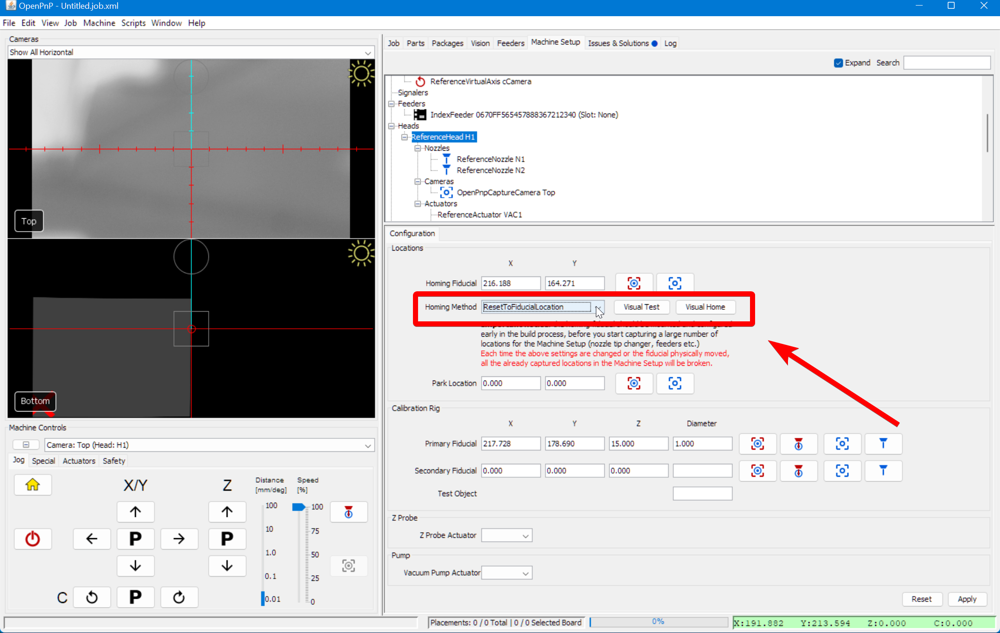 -
Click
Applyto save this change.
-
Click on the "Position Camera over location" icon button show below. This will move the top camera to approximately where your datum board is mounted.

-
In the bottom left Machine Controls pane, Select the
Actuatorstab. 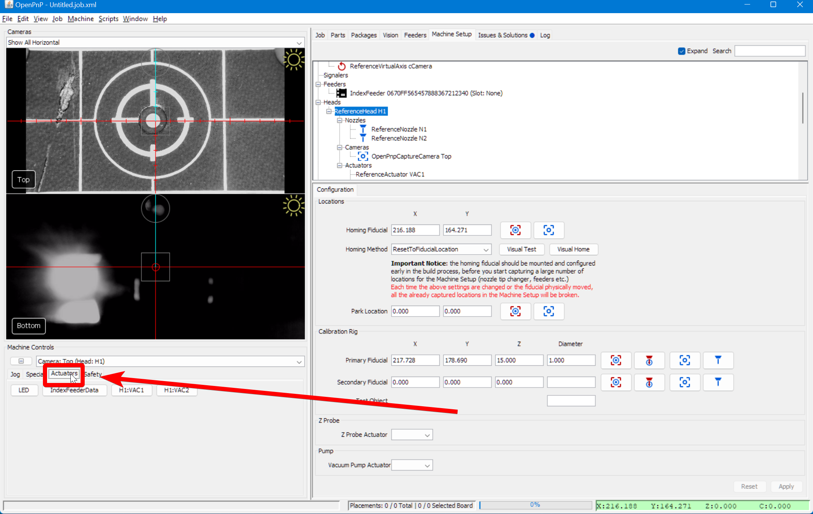 -
Turn on the LED ring lights by pressing the
LEDbutton (if they're not already on).
-
Rotate the Top Camera lens until the board is sharply in focus. If you're having trouble, try using the community-created lens adjustment tool.

Tip
Right click on the camera feed to change the Reticle style to see the center of the camera image. You can also use the scroll wheel to zoom in on the feed for more precision. 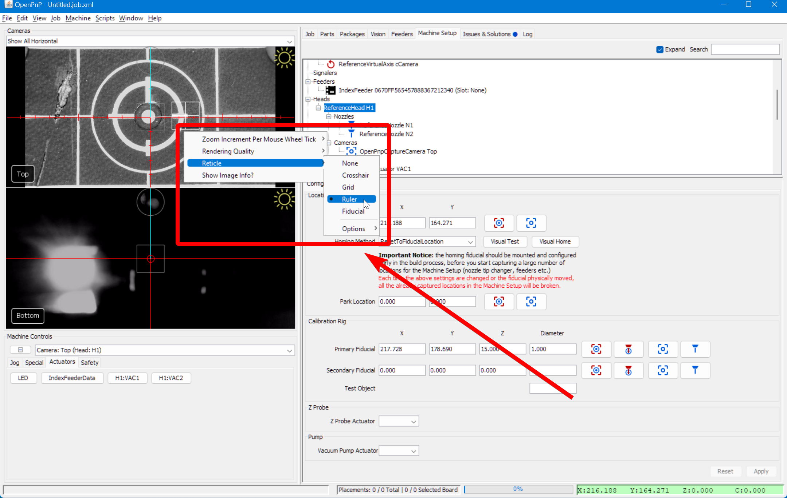
-
Go back to the
Jogtab in the "Machine Controls" pane. 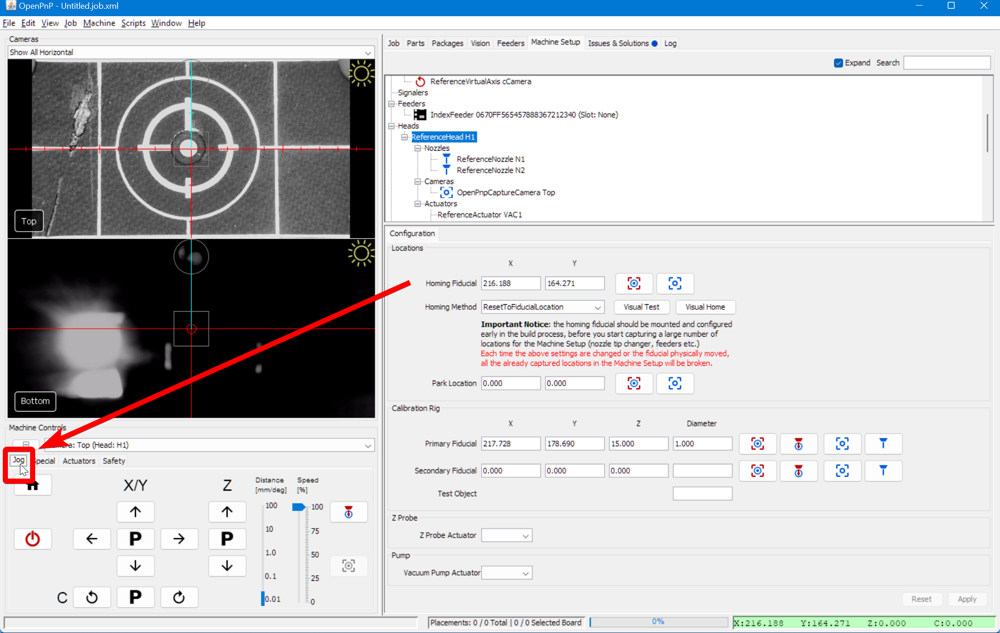 -
Set the
Distanceslider to0.1for more precise movements.
-
Manually jog the head so that the reticle in the center of the Top Camera feed in your top camera view is perfectly centered on the Homing Fiducial in the center of the Opulo logo.


Double-Check Camera Exposure
As before, we're going to double-check our camera exposure.
-
Navigate to the
Machine Setuptab.
-
Click the "Expand" checkbox if necessary. 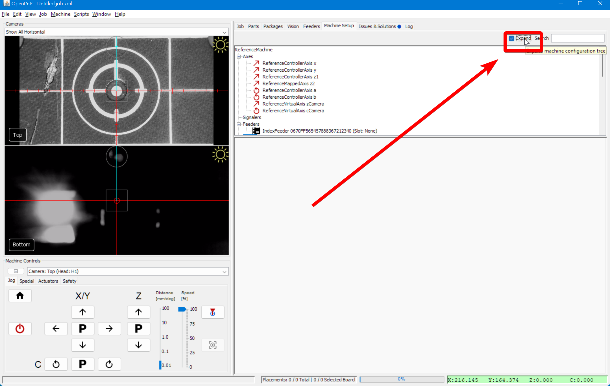
-
Navigate to
Heads > ReferenceHead H1 > Cameras > OpenPnPCaptureCamera Top. 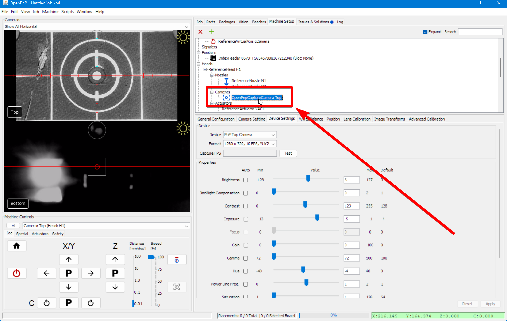 -
In the lower detail pane, switch to the
Device Settingstab.
-
Right click on the camera feed to enable the image info card. This will give you the brightness histogram of the image. In the next step, you'll want to tune your exposure and other camera settings so the image isn't too bright or too dark. The histogram can help: make sure the graph isn't going all the way to the edges of the X axis in the histogram, and that will make sure all of the image's details are available for the computer to use when it is looking for the homing fiducial. 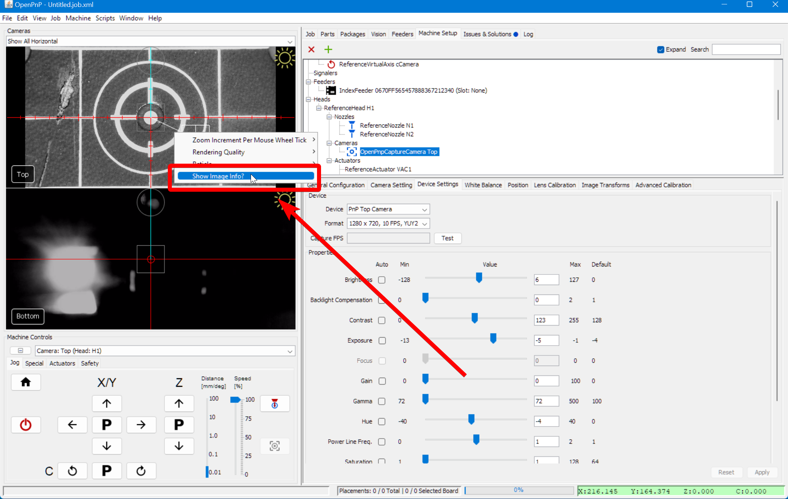 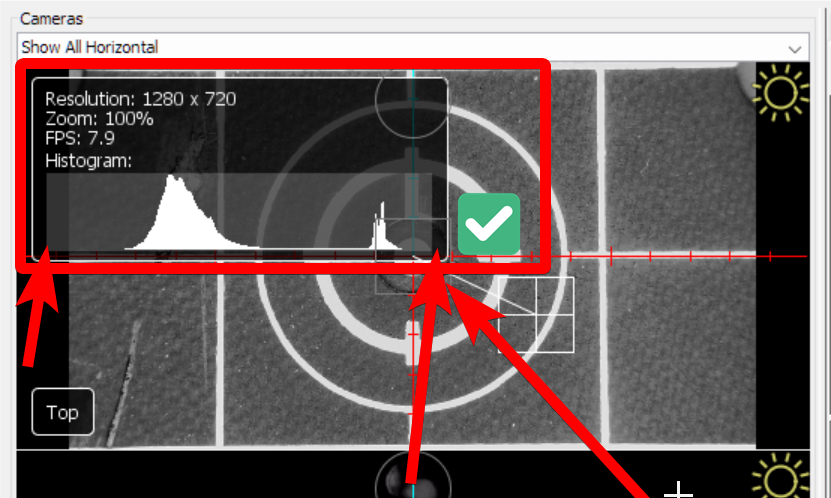 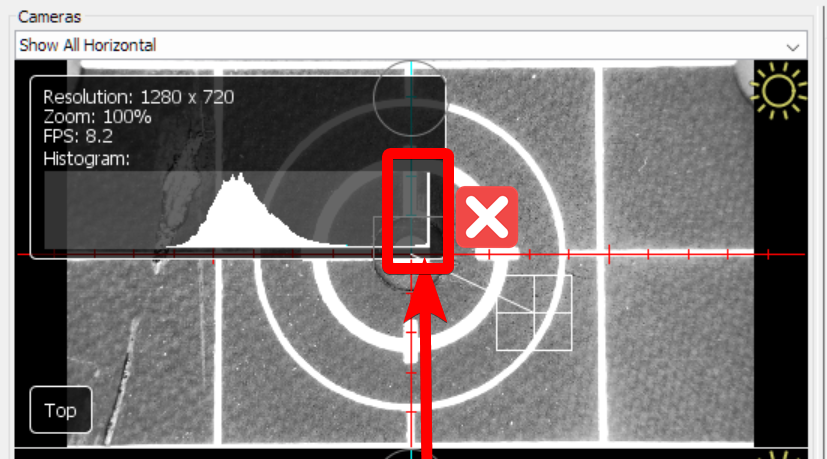
-
Adjust the exposure and other camera settings. The goal is to make the image clear and have a lot of contrast, without being too bright or too dark overall. In some cases you can simply check the
Autocheckbox forExposure, then uncheck it to save the automatically set value. 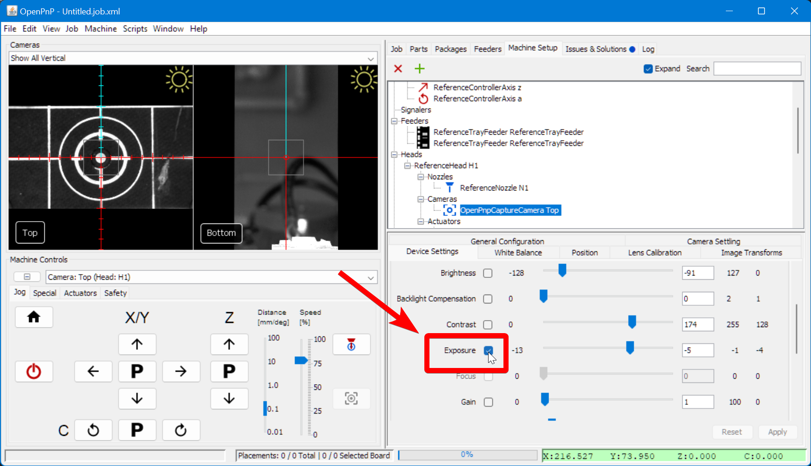For Mac Users
Due to an issue with the camera driver in OpenPnP, some Mac users might notice that the image settings are greyed out for you. There's a fantastic open-source application called CameraController that can be used to edit these settings.
Apply Homing Fiducial Changes
-
Double-check that:
- The Homing Fiducial is in the center of the reticle in the camera feed.
- The camera image is in sharp focus.
- The camera image is properly exposed.
-
Go back to Machine Setup and select
Heads > ReferenceHead H1.
-
Click on the "Capture Location" icon button to save the location where OpenPnP will start searching for the Homing Fiducial. 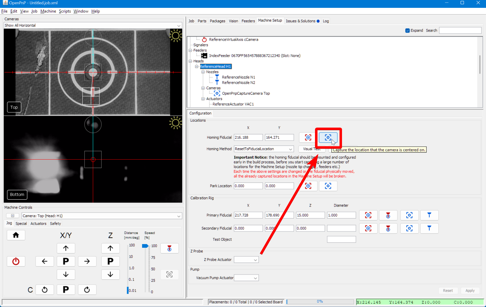
-
Click
Applyto save your changes.
-
Click on the "Home" button in the
Machine Controls Pane > Jog Taband watch your machine home using the limit switches, then move the top camera over the homing fiducial and find its exact location. You may still get an error aboutnozzle tip calibration, which is normal. We'll be working on that next. -
If your machine positions correctly over the homing fiducial but you receive the error:
FIDUCIAL-HOME no matches found., you should double-check your camera settings. If they seem alright, you may need to adjust your vision pipeline.
Next Steps
Next is the MM/Pixel Calibration.